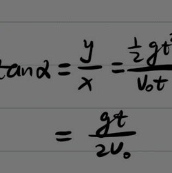

骑车与户外
自行车是我常用的出行方式，闲下来就爱往城外骑，吹着风逛遍大连的大街小巷。运动也是日常习惯，喜欢出去走动，不爱闷在教室里。

SM's PROFILE · Max
认真做事，偶尔猎奇，骑单车逛遍大连，在阅读和电影里找另一种生活。
我是孙陌，也可以叫我Max，是wza的高中同学，现在在大连市第五中学读高二。
性格上做事认真，对新鲜、猎奇的内容有天然好奇心。平时爱好很杂：听歌、打游戏、看书、运动、到处旅行找好吃的、看电影，闲下来也会骑上自行车在城里兜风。擅长写小说、绘制地图，这些创作是我日常最愿意花时间打磨的事。
音乐上现在循环最多的是《东南苦行山》；电影里最喜欢《欢迎来龙餐馆》，对强行煽情的影视作品完全接受不了。吃东西上最大的吐槽点就是五中食堂，除开食堂的菜品我都喜欢。平时最欣赏说话算数的人，最烦别人说话的时候随便打断。
现在主要精力放在学习上，最大的日常怨念就是：五中食堂为什么那么难吃？
“人生得意须尽欢，莫使金樽空对月。”
自行车是我常用的出行方式，闲下来就爱往城外骑，吹着风逛遍大连的大街小巷。运动也是日常习惯，喜欢出去走动，不爱闷在教室里。
喜欢阅读，也自己写小说、画地图。这些创作没有什么宏大目标，就是把脑子里的想法慢慢落到纸上，是我自己的小世界。
歌单里循环最多的是《东南苦行山》，不喜欢刻意神化、脱离现实的内容；电影偏爱《欢迎来龙餐馆》这种写实的故事，强行煽情的片子看两分钟就想走。
喜欢到处旅行找好吃的，美食是出门最大的动力。唯一的雷区就是五中食堂的菜，除此之外不挑吃的，就爱吃学校以外的正常饭菜。
2009年11月9日出生在大连，天蝎座。故事从这里开始，之后慢慢长大，有了喜欢的音乐、看过的电影、骑过的路。
2016年进入东北路小学，开始背着书包上学，在学校里慢慢长大，日子简单又踏实。
2022年考入大连市第二十一中学，开启三年初中生活。在这段时间里养成了骑行、阅读的习惯，也开始尝试写东西、画地图。
2025年进入大连市第五中学读高中。直到今天最大的日常吐槽，依然是学校食堂的饭菜口味。
现在高二，主要精力放在学习上。闲下来还是会骑车、听歌、看电影，继续在自己的小爱好里慢慢生活。
这是孙陌的好友主页；歌曲为占位内容，联系方式仅用于朋友联系，添加时请说明来意。